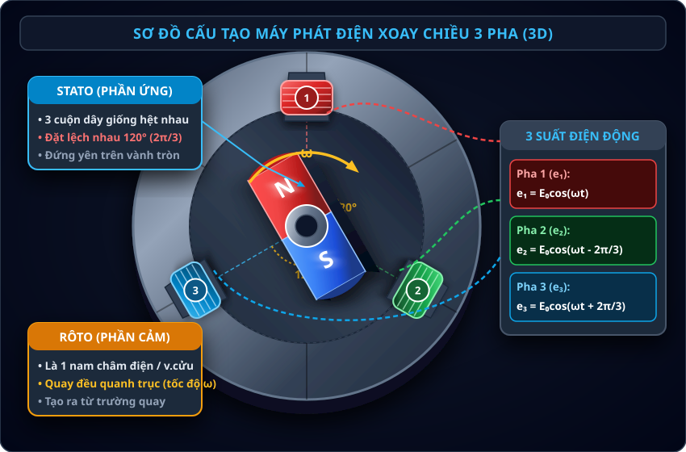
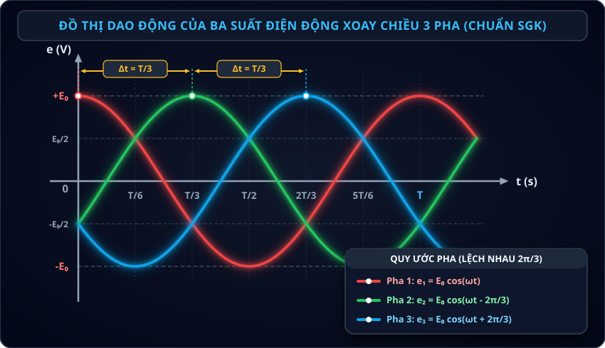

Bài 17: Máy Phát Điện Xoay Chiều

Nguyên tắc máy phát điện: Rôto quay làm từ thông qua cuộn dây biến thiên tuần hoàn sinh ra suất điện động xoay chiều
NỘI DUNG BÀI HỌC
1. Nguyên Tắc Hoạt Động & Cấu Tạo Chung
Máy phát điện xoay chiều là thiết bị thực hiện quá trình biến đổi cơ năng thành điện năng hoạt động dựa trên hiện tượng cảm ứng điện từ.
Khi rôto quay, từ thông gửi qua các cuộn dây dẫn biến thiên tuần hoàn theo thời gian, làm xuất hiện trong các cuộn dây một suất điện động cảm ứng xoay chiều hình sin.
Phân biệt cấu tạo của máy phát điện xoay chiều:
• Phần cảm: Là bộ phận tạo ra từ trường (nam châm vĩnh cửu hoặc nam châm điện có dòng điện một chiều kích từ).
• Phần ứng: Là bộ phận gồm các cuộn dây dẫn kín sinh ra suất điện động cảm ứng.
• Stato: Là phần đứng yên, cố định gắn liền với vỏ khung của máy phát điện.
• Rôto: Là phần chuyển động quay quanh trục đối xứng của máy phát điện.
• Trong các nhà máy điện (thủy điện Hòa Bình, nhiệt điện Phả Lại...), dòng điện tạo ra ở phần ứng có điện áp lên tới hàng chục kilôvôn ($\text{kV}$) và cường độ dòng điện hàng nghìn ampe ($\text{A}$).
• Nếu để cuộn dây phần ứng quay (làm rôto), việc dẫn dòng điện cực lớn đó qua hệ thống vành khuyên và chổi quét than sẽ sinh ma sát rất lớn, phát sinh hồ quang tia lửa điện gây cháy mòn nhanh chóng và nguy hiểm.
Do đó, người ta luôn bố trí: Nam châm (phần cảm) quay làm rôto, còn các cuộn dây phần ứng đứng yên làm stato để dẫn điện trực tiếp ra mạch ngoài mà không cần chổi quét tiếp điện.
2. Máy Phát Điện Xoay Chiều 1 Pha
Máy phát điện xoay chiều một pha tạo ra một suất điện động xoay chiều hình sin cung cấp cho mạch điện một pha.
THÍ NGHIỆM ẢO: NGUYÊN TẮC HOẠT ĐỘNG MÁY PHÁT ĐIỆN XOAY CHIỀU 1 PHA 1-Phase Lab
Mô phỏng động học: Nam châm Rôto quay → Từ thông $\Phi(t)$ qua cuộn dây Stato biến thiên → Sinh ra suất điện động cảm ứng $e(t)$
Kéo thanh trượt tốc độ quay ($n$) để thay đổi tần số góc $\omega$. Quan sát chu kì đổi chiều của dòng điện và độ sáng bóng đèn / góc lệch kim vôn kế.
Tăng từ trường $B$ hoặc số vòng dây $N$ để quan sát biên độ suất điện động cực đại $E_0 = \omega NBS$ tăng lên rõ rệt trên màn hình dao động kí.
Quan sát đồ thị: Suất điện động cảm ứng $e(t)$ luôn trễ pha $\pi/2$ rad so với từ thông $\Phi(t)$ ($\Phi$ đạt cực đại khi $e = 0$, $\Phi = 0$ khi $|e| = E_0$).
• Giả sử khung dây gồm $N$ vòng, diện tích $S$, quay đều với tốc độ góc $\omega$ quanh trục vuông góc với đường sức từ đều $\vec{B}$.
• Tại thời điểm $t$, góc hợp bởi vectơ pháp tuyến $\vec{n}$ và $\vec{B}$ là $\alpha = \omega t + \varphi$. Từ thông qua khung dây:
• Theo Định luật Faraday, suất điện động cảm ứng xuất hiện trong khung dây:
Trong đó: $E_0 = \omega \Phi_0 = \omega N B S$ là suất điện động cực đại; Suất điện động hiệu dụng là: $E = \frac{E_0}{\sqrt{2}}$.
Công thức xác định tần số dòng điện xoay chiều ($f$):
• Khi tốc độ quay $n$ tính bằng vòng/giây (vòng/s):
($p$ là số cặp cực nam châm, gồm $p$ cực Bắc và $p$ cực Nam).
• Khi tốc độ quay $n$ tính bằng vòng/phút:
(Chia cho 60 để đổi tốc độ từ vòng/phút sang vòng/giây).
• Đại lượng $p$ trong công thức tần số là SỐ CẶP CỰC (Pair of Poles), mỗi cặp cực gồm đúng 1 cực Bắc ($N$) và 1 cực Nam ($S$).
• Lưu ý: Nếu đề bài cho "máy phát điện có $2p$ cực từ" (hoặc "gồm $K$ cực từ") thì số cặp cực phải là $p = \frac{K}{2}$. Ví dụ: Đề bài cho máy có 12 cực từ $\Longrightarrow$ Số cặp cực $p = \frac{12}{2} = 6$ cặp cực!
3. Máy Phát Điện Xoay Chiều 3 Pha
Máy phát điện xoay chiều ba pha là máy tạo ra hệ thống ba suất điện động xoay chiều hình sin cùng biên độ, cùng tần số nhưng lệch pha nhau từng đôi một góc $120^\circ$ ($2\pi/3\text{ rad}$).

Hình 17.2: Sơ đồ bố trí 3 cuộn dây trên vành tròn Stato và nam châm Rôto ở tâm.
vatli102.com• Stato (Phần ứng): Gồm 3 cuộn dây dẫn hoàn toàn giống hệt nhau về kích thước, số vòng và cách quấn, được bố trí cố định trên vành tròn lệch nhau từng đôi một một góc $120^\circ$ ($2\pi/3\text{ rad}$).
• Rôto (Phần cảm): Là một nam châm điện (hoặc nam châm vĩnh cửu) quay đều quanh trục tâm $O$ với tốc độ góc $\omega$.
Đặc điểm đối xứng cân bằng: Tổng các suất điện động tức thời tại mọi thời điểm luôn luôn bằng không:

Hình 17.3: Đồ thị 3 suất điện động xoay chiều hình sin cùng biên độ $E_0$ lệch pha nhau $2\pi/3\text{ rad}$.
vatli102.comTHÍ NGHIỆM ẢO: MÁY PHÁT ĐIỆN XOAY CHIỀU 3 PHA 3-Phase Lab
Mô phỏng động học: Nam châm Rôto quay quét qua 3 cuộn dây Stato lệch 120° → sinh ra hệ 3 suất điện động lệch pha $2\pi/3$
Truyền tải điện năng bằng dòng ba pha (4 dây hoặc 3 dây) tiết kiệm được rất nhiều khối lượng kim loại đồng/nhôm làm đường dây tải điện so với 3 đường điện một pha riêng biệt.
Dòng điện ba pha khi cho vào các cuộn dây stato của động cơ sẽ tạo ra từ trường quay cực kì mạnh mẽ và ổn định, giúp vận hành động cơ không đồng bộ ba pha công nghiệp một cách dễ dàng và hiệu quả cao.
4. Các Dạng Bài Tập Trọng Tâm & Lời Giải Chi Tiết
DẠNG 1: XÁC ĐỊNH TẦN SỐ, TỐC ĐỘ QUAY RÔTO VÀ SỐ CẶP CỰC
PHƯƠNG PHÁP GIẢI & CÔNG THỨC:
• Nếu tốc độ quay $n$ đo bằng vòng/giây (vòng/s): $f = p \cdot n \Longrightarrow n = \dfrac{f}{p};\ p = \dfrac{f}{n}$.
• Nếu tốc độ quay $n$ đo bằng vòng/phút: $f = \dfrac{p \cdot n}{60} \Longrightarrow n = \dfrac{60f}{p};\ p = \dfrac{60f}{n}$.
• Tần số góc của dòng điện: $\omega = 2\pi f = 2\pi p n$ ($\text{rad/s}$).
Ví dụ 1: Một máy phát điện xoay chiều một pha có rôto gồm $p = 4$ cặp cực nam châm quay đều. Để máy phát ra dòng điện xoay chiều có tần số chuẩn quốc gia $f = 50\text{ Hz}$, rôto phải quay với tốc độ bằng bao nhiêu:
a) Tính theo đơn vị vòng/giây?
b) Tính theo đơn vị vòng/phút?
Lời giải chi tiết:
a) Tốc độ quay theo đơn vị vòng/giây:
Áp dụng công thức: $f = p \cdot n \Longrightarrow n = \dfrac{f}{p} = \dfrac{50}{4} = \mathbf{12,5\text{ vòng/s}}$.
b) Tốc độ quay theo đơn vị vòng/phút:
Ta có: $n(\text{vòng/phút}) = n(\text{vòng/s}) \times 60 = 12,5 \times 60 = \mathbf{750\text{ vòng/phút}}$.
(Hoặc áp dụng trực tiếp: $n = \dfrac{60f}{p} = \dfrac{60 \cdot 50}{4} = 750\text{ vòng/phút}$).
Ví dụ 2: Rôto của một máy phát điện xoay chiều một pha quay với tốc độ $n = 600\text{ vòng/phút}$. Dòng điện xoay chiều do máy sinh ra có tần số $f = 50\text{ Hz}$.
a) Xác định số cặp cực từ $p$ của rôto.
b) Hỏi rôto của máy phát này có tổng cộng bao nhiêu cực từ nam châm?
Lời giải chi tiết:
a) Số cặp cực $p$:
Áp dụng công thức: $f = \dfrac{p \cdot n}{60} \Longrightarrow p = \dfrac{60 \cdot f}{n} = \dfrac{60 \cdot 50}{600} = \mathbf{5\text{ (cặp cực)}}$.
b) Tổng số cực từ của máy:
Mỗi cặp cực gồm 1 cực Bắc và 1 cực Nam nên tổng số cực từ là:
$$K = 2p = 2 \times 5 = \mathbf{10\text{ (cực từ)}}\text{ (gồm 5 cực Bắc và 5 cực Nam)}.$$
DẠNG 2: TÍNH SUẤT ĐIỆN ĐỘNG & TỪ THÔNG CỦA MÁY PHÁT ĐIỆN
PHƯƠNG PHÁP GIẢI & CÔNG THỨC CỐT LÕI:
• Từ thông cực đại qua cuộn dây: $\Phi_0 = N \cdot B \cdot S$ ($\text{Wb}$).
• Suất điện động cực đại: $E_0 = \omega \cdot \Phi_0 = \omega N B S = 2\pi f N B S$ ($\text{V}$).
• Suất điện động hiệu dụng: $E = \dfrac{E_0}{\sqrt{2}} = \dfrac{\omega N B S}{\sqrt{2}}$ ($\text{V}$).
• Pha của suất điện động luôn trễ pha góc $\pi/2$ so với từ thông: Nếu $\Phi(t) = \Phi_0 \cos(\omega t + \varphi) \Longrightarrow e(t) = E_0 \cos(\omega t + \varphi - \pi/2)$.
Ví dụ 3: Một khung dây dẫn phẳng quay đều với tốc độ $3000\text{ vòng/phút}$ quanh một trục vuông góc với các đường sức từ của từ trường đều có cảm ứng từ $B = 0,2\text{ T}$. Khung gồm $N = 100$ vòng dây, mỗi vòng có diện tích $S = 50\text{ cm}^2$. Chọn gốc thời gian $t = 0$ lúc vectơ pháp tuyến $\vec{n}$ của khung dây cùng hướng với vectơ cảm ứng từ $\vec{B}$.
a) Tính tần số góc $\omega$ và từ thông cực đại $\Phi_0$ gửi qua khung dây.
b) Tính suất điện động cực đại $E_0$ và suất điện động hiệu dụng $E$ của máy phát.
c) Viết biểu thức suất điện động tức thời $e(t)$ xuất hiện trong khung dây.
Lời giải chi tiết:
Đổi đơn vị: $S = 50\text{ cm}^2 = 50 \times 10^{-4}\text{ m}^2 = 5 \times 10^{-3}\text{ m}^2$. Tốc độ quay: $n = 3000\text{ vòng/phút} = \dfrac{3000}{60} = 50\text{ vòng/s}$.
a) Tần số góc và từ thông cực đại:
• Tần số góc: $\omega = 2\pi n = 2\pi \cdot 50 = 100\pi\text{ rad/s} \approx 314\text{ rad/s}$.
• Từ thông cực đại qua $N$ vòng dây:
$$\Phi_0 = N \cdot B \cdot S = 100 \cdot 0,2 \cdot (5 \times 10^{-3}) = \mathbf{0,1\text{ Wb}}.$$
b) Suất điện động cực đại và hiệu dụng:
• Suất điện động cực đại:
$$E_0 = \omega \cdot \Phi_0 = 100\pi \cdot 0,1 = 10\pi\text{ V} \approx \mathbf{31,4\text{ V}}.$$
• Suất điện động hiệu dụng:
$$E = \frac{E_0}{\sqrt{2}} = \frac{10\pi}{\sqrt{2}} = 5\pi\sqrt{2}\text{ V} \approx \mathbf{22,2\text{ V}}.$$
c) Biểu thức suất điện động tức thời:
Tại $t = 0$, $\vec{n} \uparrow\uparrow \vec{B} \Longrightarrow \varphi_{\Phi} = 0 \Longrightarrow \Phi(t) = 0,1\cos(100\pi t)\text{ Wb}$.
Suất điện động trễ pha $\pi/2$ so với từ thông nên:
$$e(t) = 10\pi\cos\left(100\pi t - \frac{\pi}{2}\right)\text{ (V)}.$$
Ví dụ 4: Một máy phát điện xoay chiều 1 pha tạo ra suất điện động có biểu thức $e = 220\sqrt{2}\cos(100\pi t)\text{ V}$.
a) Xác định giá trị cực đại $E_0$, giá trị hiệu dụng $E$, tần số góc $\omega$, chu kì $T$ và tần số $f$ của suất điện động.
b) Tính giá trị tức thời của suất điện động tại thời điểm $t = \frac{1}{300}\text{ s}$.
Lời giải chi tiết:
a) Các đại lượng đặc trưng:
• Suất điện động cực đại: $E_0 = 220\sqrt{2}\text{ V} \approx \mathbf{311\text{ V}}$.
• Suất điện động hiệu dụng: $E = \dfrac{E_0}{\sqrt{2}} = \mathbf{220\text{ V}}$.
• Tần số góc: $\omega = \mathbf{100\pi\text{ rad/s}}$.
• Chu kì: $T = \dfrac{2\pi}{\omega} = \dfrac{2\pi}{100\pi} = \mathbf{0,02\text{ s}}$.
• Tần số: $f = \dfrac{1}{T} = \mathbf{50\text{ Hz}}$.
b) Giá trị tức thời tại $t = \frac{1}{300}\text{ s}$:
Thay $t = \frac{1}{300}\text{ s}$ vào phương trình $e(t)$:
$$e = 220\sqrt{2}\cos\left(100\pi \cdot \frac{1}{300}\right) = 220\sqrt{2}\cos\left(\frac{\pi}{3}\right) = 220\sqrt{2} \cdot 0,5 = 110\sqrt{2}\text{ V} \approx \mathbf{155,6\text{ V}}.$$
DẠNG 3: BÀI TOÁN HỆ THỐNG MÁY PHÁT ĐIỆN BA PHA
PHƯƠNG PHÁP GIẢI & QUAN HỆ GIÁ TRỊ TỨC THỜI:
• Phương trình chuẩn 3 pha: $e_1 = E_0\cos(\omega t)$; $e_2 = E_0\cos(\omega t - 2\pi/3)$; $e_3 = E_0\cos(\omega t + 2\pi/3)$.
• Luôn có hệ thức liên hệ tức thời: $e_1 + e_2 + e_3 = 0 \Longrightarrow e_3 = -(e_1 + e_2)$.
• Nếu tại thời điểm $t$, $e_1 = E_0$ (cực đại) thì $e_2 = e_3 = E_0\cos(\pm 2\pi/3) = -\dfrac{E_0}{2}$.
• Nếu tại thời điểm $t$, $e_1 = 0$ và đang tăng thì $e_2 = -E_0\dfrac{\sqrt{3}}{2}$ và $e_3 = E_0\dfrac{\sqrt{3}}{2}$.
Ví dụ 5: Một máy phát điện xoay chiều ba pha đang hoạt động ổn định sinh ra ba suất điện động có cùng biên độ $E_0 = 220\text{ V}$. Tại một thời điểm $t$, suất điện động tức thời trong cuộn dây thứ nhất đạt giá trị cực đại $e_1 = 220\text{ V}$. Hãy xác định giá trị suất điện động tức thời trong hai cuộn dây còn lại ($e_2$ và $e_3$) tại thời điểm đó.
Lời giải chi tiết:
Chọn pha ban đầu của cuộn 1 là 0: $e_1 = E_0\cos(\omega t)$. Khi $e_1 = E_0 = 220\text{ V} \Longrightarrow \cos(\omega t) = 1 \Longrightarrow \omega t = 0$ (hoặc $k2\pi$).
Giá trị tức thời của suất điện động ở cuộn 2 và cuộn 3 là: $$e_2 = E_0\cos\left(0 - \frac{2\pi}{3}\right) = 220 \cdot \left(-\frac{1}{2}\right) = \mathbf{-110\text{ V}}.$$ $$e_3 = E_0\cos\left(0 + \frac{2\pi}{3}\right) = 220 \cdot \left(-\frac{1}{2}\right) = \mathbf{-110\text{ V}}.$$ Kiểm tra lại: $e_1 + e_2 + e_3 = 220 + (-110) + (-110) = 0$ (thỏa mãn tính chất cân bằng).
Ví dụ 6: Trong máy phát điện xoay chiều 3 pha đối xứng, tại một thời điểm $t_1$, người ta đo được suất điện động tức thời ở cuộn dây thứ nhất là $e_1 = 120\text{ V}$ và ở cuộn dây thứ hai là $e_2 = -80\text{ V}$. Tính suất điện động tức thời $e_3$ ở cuộn dây thứ ba tại thời điểm $t_1$.
Lời giải chi tiết:
Áp dụng tính chất đối xứng của nguồn ba pha, tổng ba suất điện động tức thời tại mọi thời điểm luôn luôn bằng không: $$e_1 + e_2 + e_3 = 0 \Longrightarrow e_3 = -(e_1 + e_2)$$
Thay số vào ta có: $$e_3 = -(120 + (-80)) = -(40) = \mathbf{-40\text{ V}}.$$
Nguyên tắc: Chuyển hóa cơ năng thành điện năng dựa trên hiện tượng cảm ứng điện từ.
Tần số máy 1 pha: $f = p \cdot n$ (khi $n$ đo bằng vòng/s) hoặc $f = \dfrac{p \cdot n}{60}$ (khi $n$ đo bằng vòng/phút).
Máy phát 3 pha: Gồm 3 cuộn dây giống hệt nhau đặt lệch nhau $120^\circ$ trên vành tròn stato, tạo 3 suất điện động xoay chiều cùng biên độ $E_0$, cùng tần số $\omega$, lệch pha từng đôi một góc $120^\circ$ ($2\pi/3\text{ rad}$) và luôn thỏa mãn: $e_1 + e_2 + e_3 = 0$.